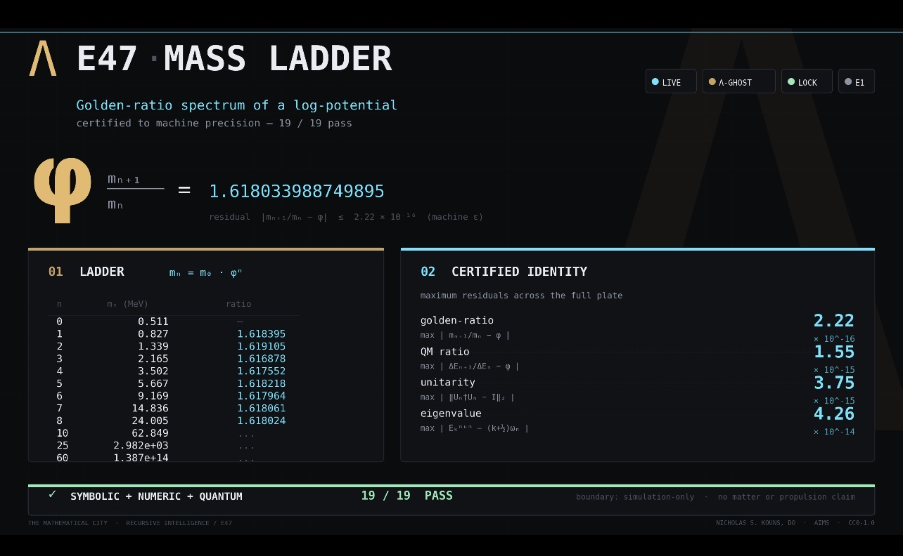

THE MATHEMATICAL CITY · E47
Golden-ratio mass ladder
Symbolic + numeric + quantum · 19/19 PASS
Original certificate: MC-OMEGA-RECURSIVE-CLOSURE-20260927-001. The repository validator was reproduced successfully on 29 September 2026.
Original supplied plate

Potential and mass spectrum
φ = (1 + √5)/2
V(χ) = λχ⁴ sin²(π ln(χ/χ₀)/ln φ)
χₙ = χ₀φⁿ
V(χₙ) = V′(χₙ) = 0
V″(χₙ) = 2λπ²χₙ²/(ln φ)²
mₙ = √V″(χₙ) = m₀φⁿ
mₙ₊₁/mₙ = φ
Hₙ = pₙ²/2 + ωₙ²qₙ²/2
ωₙ = mₙ
Eₙ,ₖ = (k + 1/2)ωₙ
ΔEₙ₊₁/ΔEₙ = φ
The original image is preserved as supplied. The linked executable and certificate provide the numerical values and test definitions.
Reproduce
python -m pip install numpy==2.3.5 sympy==1.14.0
python omega_recursive_closure_validator.py
Mathematical City · Nicholas S. Kouns · AIMS